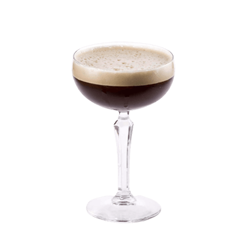

date created: 2021-11-14
status: draft, done
<<<<<<< HEAD:docs/mixing/docs/Cocktail Recipes/Espresso-Martini.md
=======
categories: [[Cocktail Recipes]]
635878ea9c5b105e9c74780f226538d22d638f08:docs/mixing/docs/Cocktail-Recipes/Espresso-Martini.md
tags:
- 居家調酒雜記
- CocktailRecipe
- IBA
aliases: Espresso Martini 濃縮咖啡馬天尼
date updated: 2022-01-09 17:57
Espresso Martini 濃縮咖啡馬天尼#
Metadata#
- IBA Cocktail: New Era Drinks
- Type:
- Main Spirit: [[Vodka]]
- Method: [[Shake]]
- Glasses: [[cocktail glass]]
- Main Recipe Source: IBA Cocktail

Ingredients & Proportion#
- 50 ml Vodka
- 30 ml Kahlúa
- 10 ml Sugar Syrup
- 1 strong Espresso
Garnish#
How to make#
- Pour all ingredients into cocktail shaker
- shake well with ice
- strain into chilled cocktail glass
Notes#
- Martini Espresso 和 Black Russian 做法差不多味道也差不多，但多了一份濃縮後感覺比後者更好入口 ，上面像濃縮咖啡一樣有一層綿密的泡沫。我沒有甘露咖啡酒（這種咖啡利口酒很好買到），用的是之前買的其他的咖啡酒。
- 根據不同咖啡酒的選擇，單糖漿要調整用量，不然太甜了。